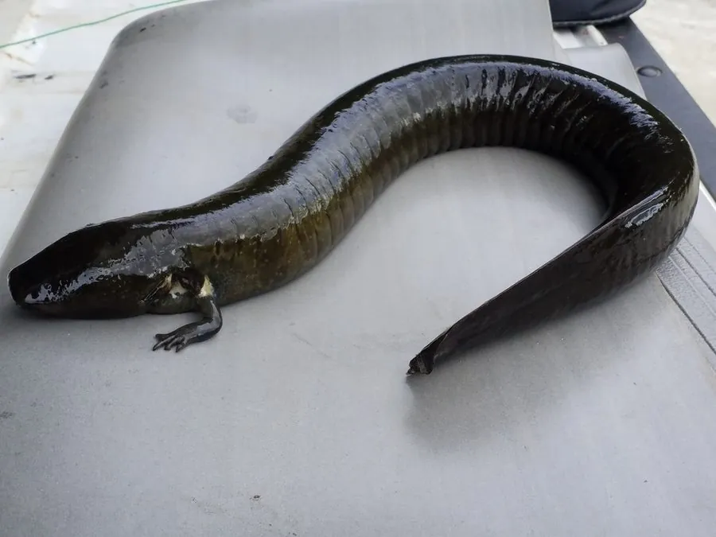

两栖动物 · 动物界
鳗螈 Siren lacertina

北美洲东南部的大型水生蝾螈，身体细长似鳗，终生保留外鳃，没有后肢，能在干涸的水塘泥中夏眠。
- 分类
- 门脊索动物门纲两栖纲目有尾目科鳗螈科属鳗螈属
- 栖息环境
- 北美洲东南部的沼泽、水沟、池塘和浅水湿地
- 地理分布
- 美国东南部及墨西哥东北部
- 保护级别
- IUCN 无危（LC）；非中国原产，在中国无保护级别
物种志
鳗螈体长 50–90 厘米，是体型较大的水生蝾螈。身体细长似鳗，呈橄榄绿、灰褐或黑褐色，体侧有浅色斑点；头部狭长，眼睛小，没有眼睑，头部两侧保留三对外鳃，前肢细小，只有三个脚趾，没有后肢。
它生活在北美洲东南部的沼泽、水沟、池塘和浅水湿地，白天藏在水草和泥洞中，夜间捕食水生昆虫、螺类、小鱼、蝌蚪和植物碎屑。当水塘干涸时，它会钻入泥中分泌黏液形成茧状结构进行夏眠，等雨水回来再钻出。繁殖期在春季，雌螈产卵于水草间，幼虫有外鳃。鳗螈的形态保留了早期四足动物的许多特征，是研究脊椎动物演化的重要物种。
形态与习性
- 食性水生昆虫、螺类、小鱼、蝌蚪和植物碎屑
- 体长约 50–90 cm
- 呼吸终生保留三对外鳃，也用肺呼吸
- 夏眠水塘干涸时钻入泥中形成茧状结构
- 繁殖春季产卵于水草间
- 四肢前肢细小，仅三趾，无后肢
趣味知识
- 鳗螈没有后肢，前肢只有三个脚趾，外形更像鳗鱼。
- 水塘干涸时，它会钻进泥里分泌黏液把自己包起来夏眠。
- 鳗螈终生保留外鳃，是研究四足动物演化的活材料。